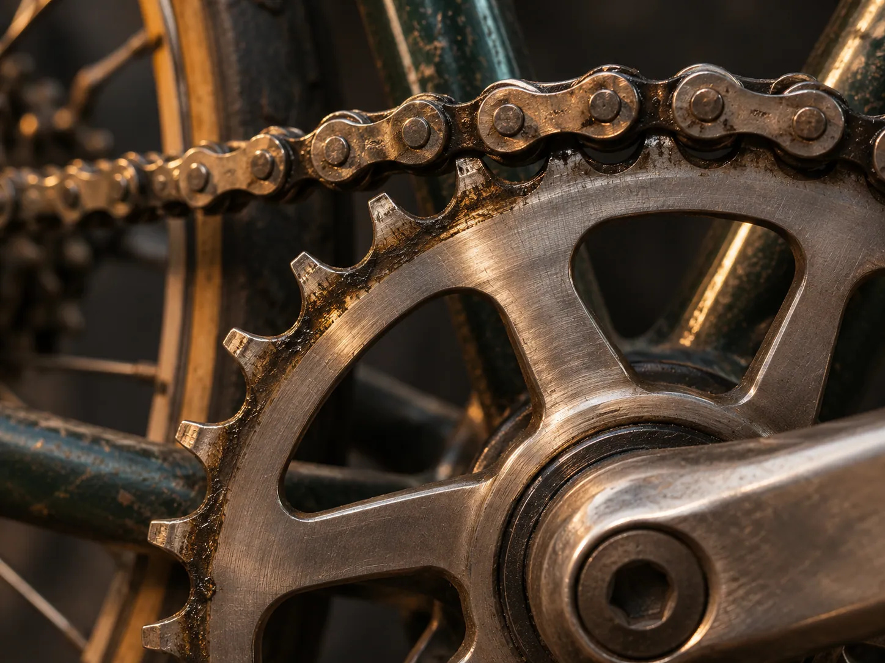
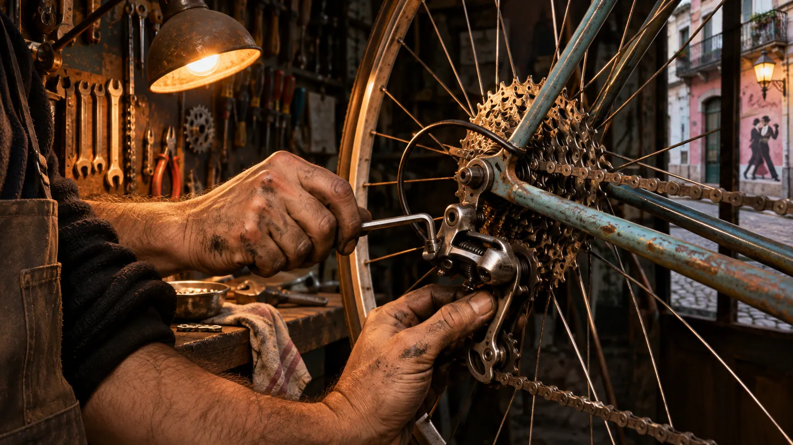
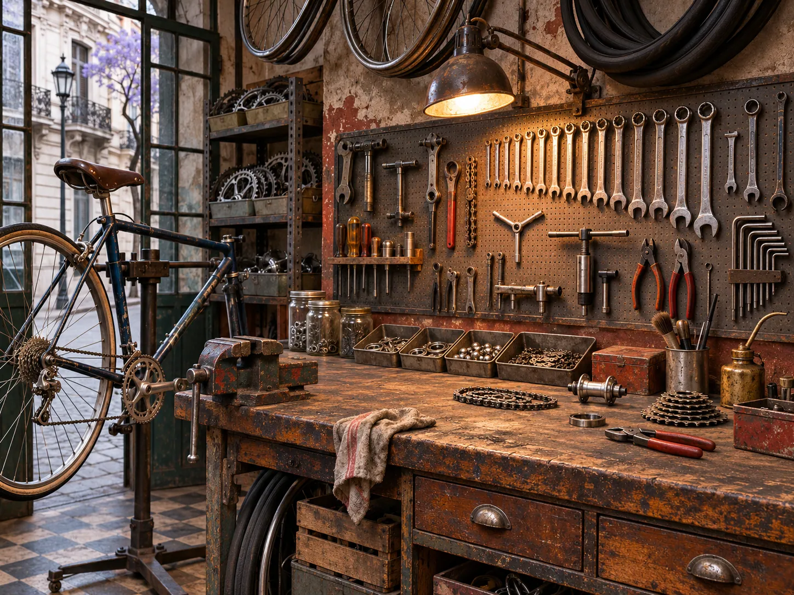
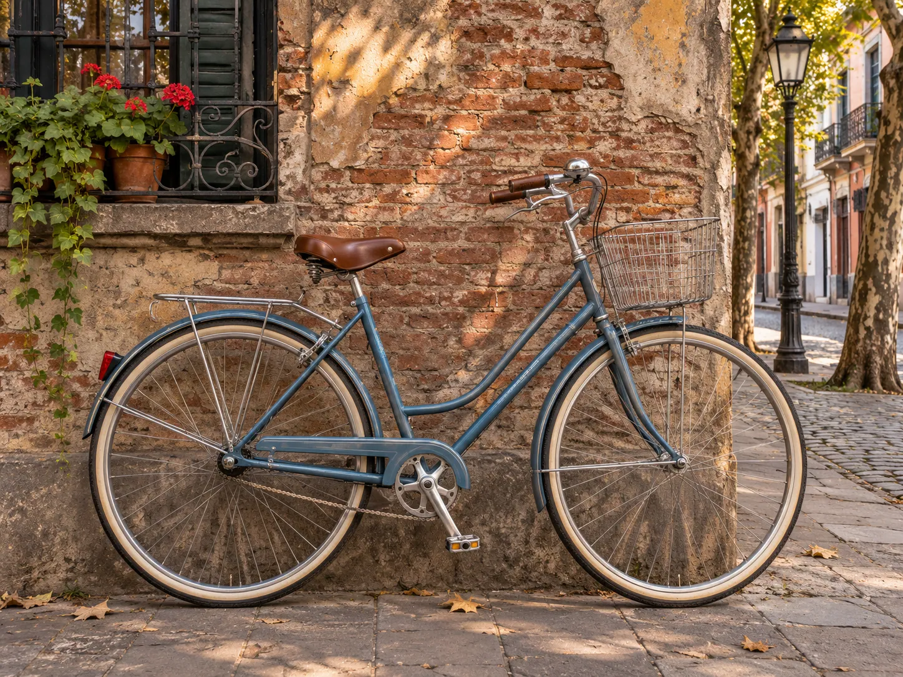

01 / REPARARQue todo vuelva a andar.
Frenos, cambios, transmisión y esos ruidos que ya conocés de memoria. Revisamos qué pasa y te contamos cómo resolverlo.
Consultá por una reparación (abre WhatsApp en otra pestaña)SAN TELMO, BUENOS AIRES
Una bici bien ajustada se siente.
La tuya todavía tiene mucho por rodar.
Abre WhatsApp · Número de demostración
Reparar también es seguir.

LO QUE HACEMOS
La que usás todos los días. La que quedó en el patio. La que querés hacer tuya. Les damos una mano.

01 / REPARARFrenos, cambios, transmisión y esos ruidos que ya conocés de memoria. Revisamos qué pasa y te contamos cómo resolverlo.
Consultá por una reparación (abre WhatsApp en otra pestaña)
02 / AJUSTARUna puesta a punto para pedalear tranquilo: ajuste, limpieza y lubricación. El cuidado que tu bici viene pidiendo.
Hablemos de tu bici (abre WhatsApp en otra pestaña)
03 / RECUPERARBicis usadas con ganas de volver a la calle. Consultanos qué hay y encontremos una que vaya con vos.
Consultá por bicis usadas (abre WhatsApp en otra pestaña)Los tres enlaces abren WhatsApp con el mensaje ya escrito. Número de demostración.
ASÍ LABURAMOS
Primero miramos.
Después, hablamos.
Escribinos y contanos qué bici tenés y qué notaste. Una foto también ayuda.
Vemos qué necesita y te explicamos el trabajo y el presupuesto antes de empezar.
Hacemos el trabajo acordado y te contamos cómo cuidarla para la próxima vuelta.
PUERTAS ADENTRO
Herramientas a mano, un poco de grasa y tiempo para hacer las cosas bien.
Imágenes generadas para esta demo conceptual.
¿LA MIRAMOS?
Contanos qué necesita.
El primer paso es una charla.
+54 11 5555-0202 · Número de demostración
Este enlace abre WhatsApp con un mensaje de consulta. Taller y contacto ficticios.